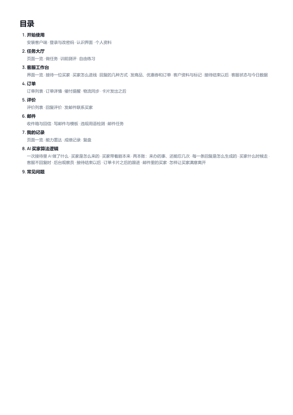

现在的目录（左）是一串加粗的章名，小节挤在一行里用圆点隔开，没有层次。下面三种排法，都用学生端这本（9 章 44 节，小节最多）按 A4 原比例画；选定后三本一起改。封面上的“操作手册”小字和“本册内容”已经按你画的删掉了。

左边一列蓝色章号，右边章名；小节带编号（1.1、1.2…，和正文标题一致），两栏排，章与章之间一条细线。一页放得下，章节一眼对得上正文。
最传统的写法：章名一行，下面每个小节单独一行、缩进。最好读，但学生端要排两页。
整页分左右两栏，每章一块：大号细体章号、章名、下面一行一个小节。看着像杂志目录，留白多。
| # | 事项 | 建议 |
|---|---|---|
| 1 | 选哪一版 | A。一页放得下，层次清楚，小节编号和正文标题对得上 |
| 2 | 每页页脚加页码（封面不印，目录页起印，上面三版的底部就是样子） | 加。印出来翻找方便。目录里没法直接写“第几页”（打印引擎不支持自动算页码），所以目录做成可点击：在 PDF 里点哪一章、哪一节就跳过去，已实测可用 |